| 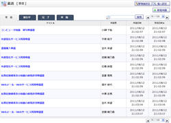 |
稟議一覧 受信
・
進行中
・
完了
・
草稿
受信・進行中・完了した稟議と、作成した草稿の確認ができます。 |
|---|---|
 |
管理者設定メニュー
管理者グループに所属するユーザのみ使用可能な機能のメニュー画面です。 申請中案件管理、完了案件管理、共有テンプレート管理の機能へ遷移できます。 |
 |
基本設定
・
基本設定確認
稟議に関する基本設定を行います。 |
 |
ショートメール通知設定
稟議が申請、承認、却下された場合にショートメールで通知を行うかどうか設定できます。 |
| 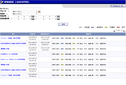 |
申請中案件管理
申請中の稟議の検索ができます。 |
 |
完了案件管理
完了した稟議の検索ができます。 |
| 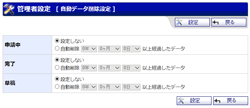 |
自動データ削除設定
・
自動データ削除設定確認
管理者グループに所属するユーザのみが使用可能です。 バッチ処理で稟議データの削除を行う期間が設定できます。 |
| 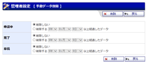 |
手動データ削除
・
手動データ削除確認
管理者グループに所属するユーザのみが使用可能です。 指定した期間に該当する稟議データの削除を行います。 |
 |
共有テンプレート選択
ユーザ全員で共有する稟議テンプレートの追加、編集ができます。 |
| 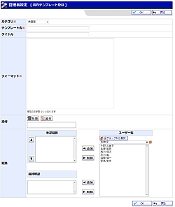 |
共有テンプレート登録
・
編集
共有テンプレート登録確認 ・ 編集確認 ユーザ全員で共有する稟議テンプレートを登録、編集します。 |
| 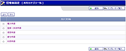 |
共有テンプレートカテゴリ選択
ユーザ全員で共有するテンプレートカテゴリを登録、編集します。 |
| 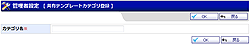 |
共有テンプレートカテゴリ登録
・
編集
共有テンプレートカテゴリ登録確認 ・ 編集確認 ユーザ全員で共有するテンプレートカテゴリを登録、編集します。 |
 |
個人設定メニュー
稟議の個人設定を行う機能のメニュー画面です。 |
 |
個人テンプレート選択
申請テンプレートを自分用に保存します。 |
 |
個人テンプレート登録
・
編集
個人テンプレート登録確認 ・ 編集確認 個人で使用する稟議テンプレートを登録、編集します。 |
 |
個人テンプレートカテゴリ選択
個人で使用するテンプレートカテゴリを登録、編集します。 |
| 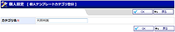 |
個人テンプレートカテゴリ登録
・
編集
個人テンプレートカテゴリ登録確認 ・ 編集確認 個人で使用するテンプレートカテゴリを登録、編集します。 |
| 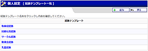 |
経路テンプレート一覧
申請経路をテンプレートとして自分用に保存します。 |
| 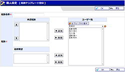 |
経路テンプレート登録
・
編集
経路テンプレートを登録、編集します。 |
| 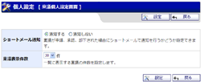 |
個人設定
稟議の個人設定を登録します。 |
| 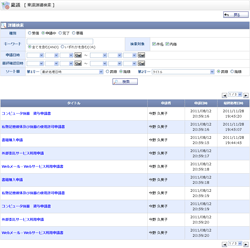 |
詳細検索
稟議（受信・進行中・完了・草稿）に詳細な条件を指定して検索を行います。 |
| 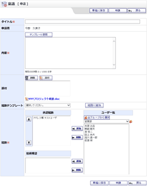 |
稟議新規作成
稟議を新規作成します。 |
 |
稟議内容確認
稟議の承認・否認・却下の作業や、完了した稟議の内容を確認できます。 |
| 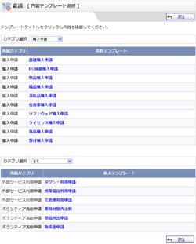 |
内容テンプレート選択
申請テンプレートを選択します。共通的に使用するテンプレート、個人で設定したテンプレートを使用する事ができます。 |
 |
内容テンプレート選択確認
選択した申請テンプレートの内容を表示します。 |